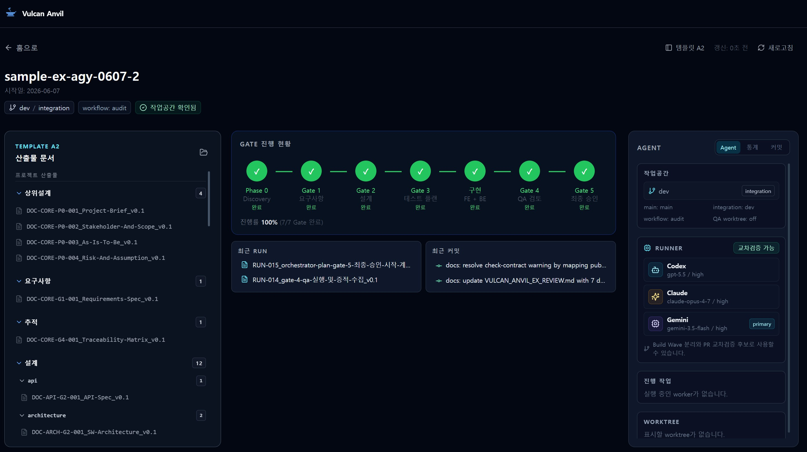

Requirements
Capture goals, constraints, acceptance criteria, and open decisions.
Experimental v0.4.x
AI agent coding governance for teams that need traceable delivery, not a magical one-click app generator.

Traceable Delivery
Vulcan-Anvil Ex keeps AI coding work connected to the decisions and evidence that make the result reviewable.
Capture goals, constraints, acceptance criteria, and open decisions.
Align screens, APIs, data, security, and testable contracts.
Split approved work into scoped runs that workers can execute and report.
Record command results, UI evidence, findings, changes, and residual risk.
Review the candidate against traceability, backlog, and delivery evidence.
Delivery Profiles
Stronger gates, fuller traceability, and evidence fit for regulated delivery.
Structured enough for product teams, lighter than audit-first delivery.
Fast experiments with honest gaps, blockers, and follow-up decisions.
Adapter-Aware
Codex, Claude, and Antigravity/Gemini can act as orchestrators, workers, or reviewers depending on the project. Vulcan-Anvil Ex provides the shared workflow contract and records what actually ran.